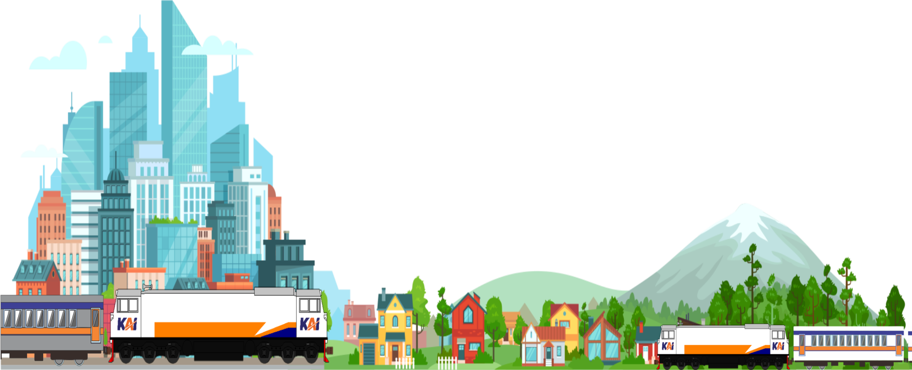
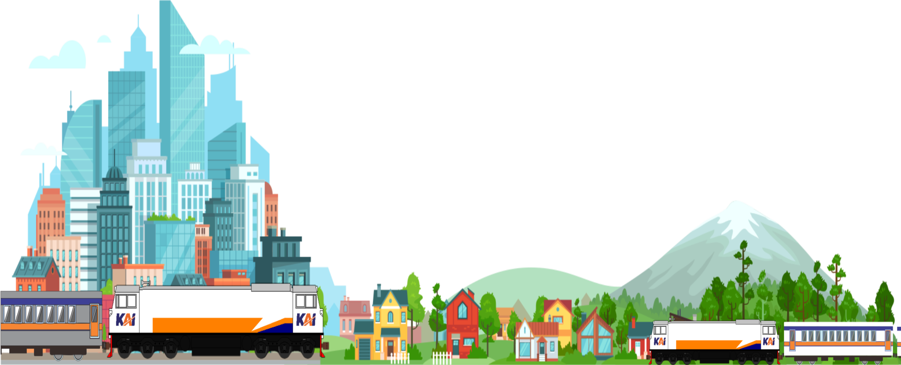
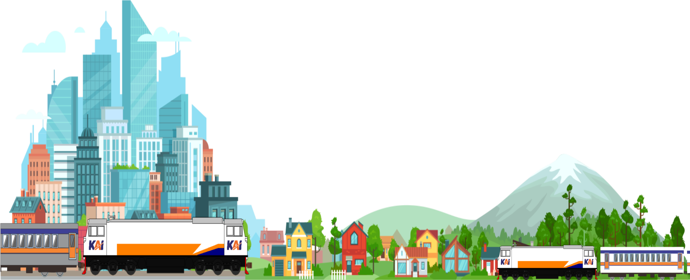
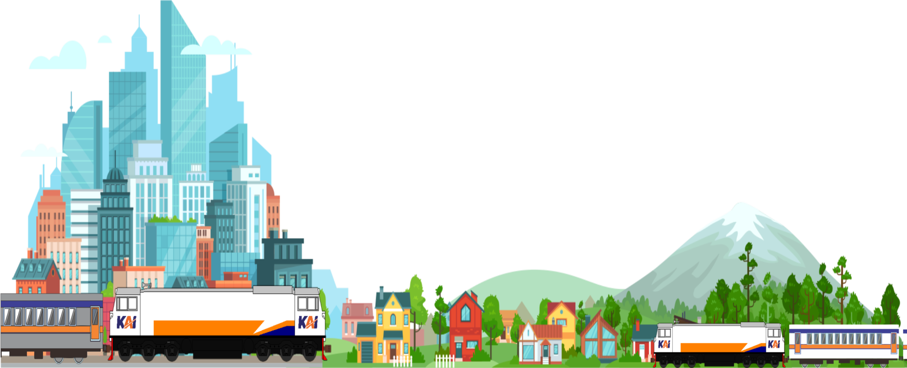

Waktunya Untuk Memulai
Petualangan

 
Explore

Explore

Explore

Explore
Kereta api adalah bentuk transportasi rel yang terdiri dari serangkaian kendaraan yang
ditarik sepanjang jalur kereta api untuk mengangkut kargo atau penumpang. Gaya gerak
disediakan oleh lokomotif yang terpisah atau motor individu dalam beberapa unit. Meskipun
propulsi historis mesin uap mendominasi, bentuk-bentuk modern yang paling umum adalah mesin
diesel dan listrik lokomotif, yang disediakan oleh kabel overhead atau rel tambahan.
Sumber energi lain termasuk kuda, tali atau kawat, gravitasi, pneumatik, baterai, dan turbin gas.
Rel kereta api biasanya terdiri dari dua, tiga atau empat rel, dengan sejumlah monorel dan guideways
maglev dalam campuran. Kata 'train' berasal dari Bahasa Prancis Kuno trahiner, dari bahasa Latin
trahere 'tarik, menarik'.
Ada berbagai jenis kereta api yang dirancang untuk tujuan tertentu. Kereta api bisa terdiri dari
kombinasi satu atau lebih dari lokomotif dan gerbong kereta terpasang, atau beberapa unit yang
digerakkan sendiri (atau kadang-kadang pelatih bertenaga tunggal atau diartikulasikan, disebut sebuah
kereta mobil). Kereta pertama dengan bentuk ditarik menggunakan tali, gravitasi bertenaga atau ditarik
oleh kuda. Dari awal abad ke-19 hampir semuanya didukung oleh lokomotif uap. Dari tahun 1910-an dan
seterusnya lokomotif uap mulai digantikan oleh kurang dan bersih (tetapi lebih kompleks dan mahal)
lokomotif diesel dan lokomotif listrik, sementara pada waktu yang sama beberapa kendaraan unit yang
digerakkan sendiri baik sistem tenaga menjadi jauh lebih umum dalam pelayanan penumpang.
Sejarah perkeretaapian sama seperti sejarah alat transportasi umumnya yang diawali dengan penemuan roda.
Mulanya dikenal kereta kuda yang hanya terdiri dari satu kereta (rangkaian), kemudian dibuatlah kereta
kuda yang menarik lebih dari satu rangkaian serta berjalan di jalur tertentu yang terbuat dari besi (rel)
dan dinamakan sepur. Ini digunakan khususnya di daerah pertambangan tempat terdapat lori yang dirangkaikan
dan ditarik dengan tenaga kuda.
etelah James Watt menemukan mesin uap, Nicolas Cugnot membuat kendaraan beroda tiga berbahan bakar uap.
Orang-orang menyebut kendaraan itu sebagai kuda besi. Kemudian Richard Trevithick membuat mesin lokomotif
yang dirangkaikan dengan kereta dan memanfaatkannya pada pertunjukan di depan masyarakat umum. George
Stephenson menyempurnakan lokomotif yang memenangi perlombaan balap lokomotif dan digunakan di jalur
Liverpool-Manchester. Waktu itu lokomotif uap yang digunakan berkonstruksi belalang. Penyempurnaan demi
penyempurnaan dilakukan untuk mendapatkan lokomotif uap yang lebih efektif, berdaya besar, dan mampu menarik
kereta lebih banyak.